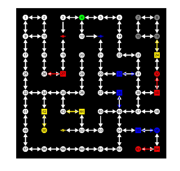
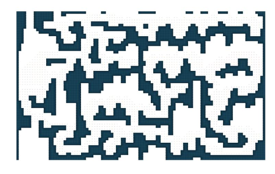

Designing an intelligent map generation system that combines Answer Set Programming (ASP) and Large Language Models (LLM) to automatically produce playable, engaging, and solvable 2D game maps — with a comparative study on gameplay quality, level diversity, and design efficiency.


Procedural Content Generation (PCG) has become an essential technique in modern game development, enabling the automatic creation of game levels, maps, and environments at scale. However, generating 2D game maps that are simultaneously playable (no softlocks or unreachable areas), engaging (varied and interesting for players), and efficient to produce (reducing manual designer workload) remains a significant open challenge.
This research proposes a dual-approach system for intelligent 2D map generation. The first approach leverages Answer Set Programming (ASP), a declarative constraint-solving paradigm, to encode hard playability constraints (reachability, key-lock dependencies, difficulty progression) and generate maps that are guaranteed to be solvable. The second approach investigates Large Language Models (LLMs) as creative map generators, prompting them to produce structured map representations and evaluating their capacity for spatial reasoning and constraint satisfaction.
Through a rigorous comparative evaluation — spanning automated playability verification, algorithmic diversity metrics, and human player studies — this research aims to quantify the trade-offs between formal constraint satisfaction (ASP) and learned generative flexibility (LLM), and to propose a hybrid framework that combines the strengths of both paradigms for next-generation procedural map design.
The following questions guide the investigation and define the scope of expected contributions.
| ID | Hypothesis | Tests Against |
|---|---|---|
| H1 | ASP-generated maps will achieve >99% solvability on automated verification, while raw LLM output will fall below 80% without post-hoc repair. | RQ1 |
| H2 | LLM-generated maps will score significantly higher on Shannon tile-entropy and topological diversity metrics than ASP maps generated under identical room/corridor budgets. | RQ2 |
| H3 | A hybrid pipeline (LLM draft → ASP repair) will be rated higher by players than either standalone method on a composite engagement score. | RQ3 |
| H4 | The hybrid pipeline will reduce average map creation time by ≥60% compared to manual design, while maintaining comparable quality ratings. | RQ4 |
We compare two fundamentally different paradigms for procedural map generation, then propose a hybrid that leverages each approach's strengths.
The hybrid pipeline combines LLM creativity with ASP verification to produce maps that are both novel and provably playable.
Designer specifies high-level constraints: map size (grid dimensions), number of rooms, difficulty target (1–10), theme (dungeon/cave/forest), required mechanics (keys, switches, bosses), and connectivity style (linear, branching, hub-spoke).
An LLM receives structured prompts with few-shot examples and chain-of-thought instructions. It outputs a JSON graph (rooms, edges, item placements) representing the map topology. Multiple candidates are sampled via temperature variation.
Each LLM draft is translated into ASP facts and checked against playability constraints (reachability, key-lock ordering, no softlocks). Constraint violations trigger targeted ASP-driven repairs: adding missing edges, relocating keys, or adjusting room connectivity — preserving the LLM's creative layout as much as possible.
The verified graph topology is materialized into a 2D tile grid using Wave Function Collapse (WFC) or template-based room filling. Each room type maps to a set of compatible tile patterns, producing visually coherent environments.
Generated maps undergo automated quality checks: A* pathfinding verification, connectivity analysis (NetworkX), difficulty curve estimation (critical path length, branch complexity), and tile-entropy diversity scoring. Metrics are logged for comparative analysis.
A multi-dimensional evaluation combining automated metrics and human studies ensures rigorous comparison across approaches.
Percentage of generated maps that pass automated A* reachability verification from start to goal, accounting for key-lock dependencies.
Shannon entropy over tile-type distributions measuring spatial variety. Higher entropy indicates more diverse and less repetitive layouts.
Graph edit distance between generated maps to quantify structural uniqueness. Measures how different each map is from every other generated map.
Wall-clock time from parameter input to verified, playable map output. Critical for real-time and interactive design workflows.
Mean Opinion Score from human playtesters rating fun, challenge, exploration satisfaction, and willingness to replay on a 1–7 Likert scale.
Time savings vs. manual level design (measured in minutes/map), plus designer satisfaction with generated maps as starting points for refinement.
A 12-week execution plan spanning literature review through final evaluation and paper writing.
| Phase | Weeks | Activities | Deliverables |
|---|---|---|---|
| Literature Review & Setup | W1 – W2 | Survey PCG literature (WFC, BSP, graph grammars, ASP-based generation, LLM spatial reasoning). Set up dev environment, Clingo, API access. | Annotated bibliography, codebase skeleton, baseline implementations |
| ASP Module Development | W3 – W4 | Encode playability constraints in ASP. Implement room-graph generation with Clingo. Build WFC tile filler. Validate on 5×5 to 12×12 grids. | Working ASP generator, 100+ verified test maps, constraint rule library |
| LLM Module Development | W5 – W6 | Design prompt templates (zero-shot, few-shot, CoT). Implement JSON schema for map output. Test across 3+ LLM providers. Build iterative repair loop. | Prompt library, LLM generation pipeline, failure taxonomy |
| Hybrid Pipeline Integration | W7 – W8 | Connect LLM draft → ASP verifier → repair engine. Implement tile instantiation. Build playable game demo with Pygame/Phaser for playtesting. | End-to-end hybrid pipeline, playable demo, integration tests |
| Automated Evaluation | W9 – W10 | Generate 500+ maps per approach. Run solvability checks, diversity metrics, latency benchmarks. Statistical analysis (t-tests, ANOVA). | Evaluation dataset, metric dashboards, statistical comparisons |
| User Study & Paper | W11 – W12 | Conduct player study (N≥20). Collect MOS ratings. Analyze results. Write research paper (8–10 pages, IEEE/ACM format). | User study data, final research paper, presentation slides |
This research aims to advance the state of procedural content generation through the following contributions.
First systematic comparison of ASP vs. LLM for 2D map generation — providing empirical evidence on the trade-offs between formal constraint satisfaction and neural generative approaches across playability, diversity, and efficiency dimensions.
A novel hybrid pipeline (LLM → ASP repair) — demonstrating that combining creative LLM drafts with formal ASP verification can achieve both high map novelty and guaranteed solvability, a combination neither approach achieves alone.
Open-source evaluation framework — including automated solvability verification, diversity metrics, and a playable game shell for human evaluation, enabling reproducible benchmarking of future PCG approaches.
Prompt engineering guidelines for spatial content generation — documenting effective prompting strategies, failure modes, and repair patterns for using LLMs to generate structured spatial content with constraint satisfaction.
Player experience insights — quantifying how different generation approaches affect perceived fun, challenge, and exploration satisfaction, providing design guidelines for PCG-driven games.